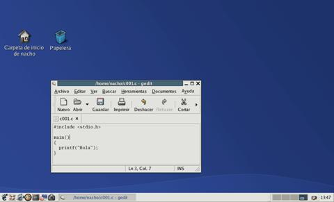
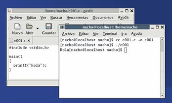
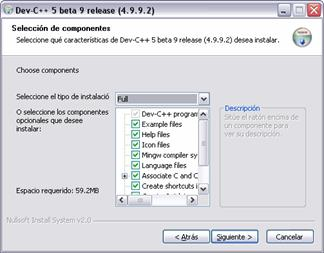
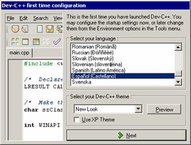
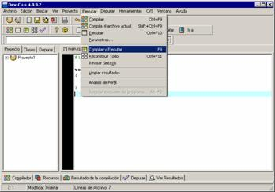
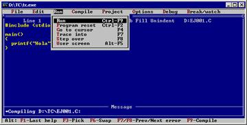

Vamos con un primer ejemplo de programa en C, posiblemente el más sencillo de los que “hacen algo útil”. Se trata de escribir un texto en pantalla. La apariencia de este programa la vimos en el tema anterior. Vamos a verlo ahora con más detalle:
#include
main()
{
printf("Hola");
} Esto escribe “Hola” en la pantalla. Pero hay mucho que comentar:
Y la cosa no acaba aquí. Aún queda más miga de la que parece en este programa, pero cuando ya vayamos practicando un poco, iremos concretando más alguna que otra cosa de las que aquí han quedado poco detalladas.
Ejercicio propuesto: Crea un programa en C que te salude por tu nombre (ej: “Hola, Nacho”).
Sólo un par de cosas más antes de seguir adelante:
#include
main() { printf("Hola"); } #include
main() {
printf("Hola");
} (esta es la forma que yo emplearé en este texto cuando estemos trabajando con fuentes de mayor tamaño, para que ocupe un poco menos de espacio).
¿Y si ese programa "me da error"? En algunas revisiones recientes del lenguaje C (especialmente en los compiladores que siguen el estándar C99) se obliga a que aparezca la palabra "int" antes de "main", y a que la última línea sea "return 0;". Veremos los motivos más adelante, en el tema 7, pero de momento asumiremos que si queremos que nuestro programa se pueda probar con cualquier compilador, su apariencia deberá ser ésta:
#include
int main()
{
printf("Hola");
return 0;
} (Nota: este apartado está más actualizado en la versión 0.95 PDF del curso; pronto se incluirán aquí esos cambios)
Los sistemas operativos de la familia Unix, como Linux, suelen incluir un compilador de C, de modo que será fácil probar nuestros programas. Supondremos que se trata de una versión de Linux de los últimos años, que tenga entorno gráfico. Podríamos usar el editor del texto del entorno gráfico, teclear el fuente y guardarlo en nuestra carpeta personal, por ejemplo con el nombre ejemplo001.c (lo que sí es importante es que termine en “.c”):

(en esta imagen se trata de Mandrake Linux 9.1, con el entorno Gnome y el editor básico que incorpora, GEdit).
Después abriríamos una ventana de terminal y teclearíamos la siguiente orden para compilar nuestro fuente:
cc ejemplo001.c –o miprograma
Donde:
Y para probar el programa teclearíamos
./miprograma
Con lo que debería aparecer escrito “Hola” en la pantalla.

(Nota: Las versiones más recientes de Linux tienen entornos integrados, desde los que podemos teclear y probar nuestro programa, con más comodidad, como en el caso de la herramienta que vamos a comentar para Windows. Dos de los entornos más extendidos son KDevelop y Anjuta).
(Nota: este apartado está más actualizado en la versión 0.95 PDF del curso; pronto se incluirán aquí esos cambios)
La familia de sistemas Windows no incluye ningún compilador de C, de modo que tendremos que localizar uno e instalarlo. Existen muchos gratuitos que se pueden descargar de Internet, y que incluyen un editor y otras herramientas auxiliares. Es el caso de Dev-C++, por ejemplo, que tiene su página oficial en www.bloodshed.net. La instalación es poco más que hacer doble clic en el fichero descargado, y hacer clic varias veces en el botón “Siguiente”:

En el caso de Dev-C++, podemos incluso trabajar con el entorno en español:

Para crear nuestro programa, en el menú "Archivo" escogemos "Nuevo / Código fuente", y nos aparece un editor vacío en el que ya podemos empezar a teclear. Si queremos nuestro programa en funcionamiento, entraríamos al menú “Ejecutar” y usaríamos la opción “Compilar y ejecutar”:

(si todavía no hemos guardado los cambios en nuestro fuente, nos pediría antes que lo hiciéramos).
Puede ocurrir que se muestre el resultado en pantalla, pero la ventana desaparezca tan rápido que no tengamos tiempo de leerlo. Si es nuestro caso, tenemos dos opciones:

#include
main()
{
printf("Hola");
getchar();
} O bien, si usamos la sintaxis más detallada:
#include
int main()
{
printf("Hola");
getchar();
return 0;
}